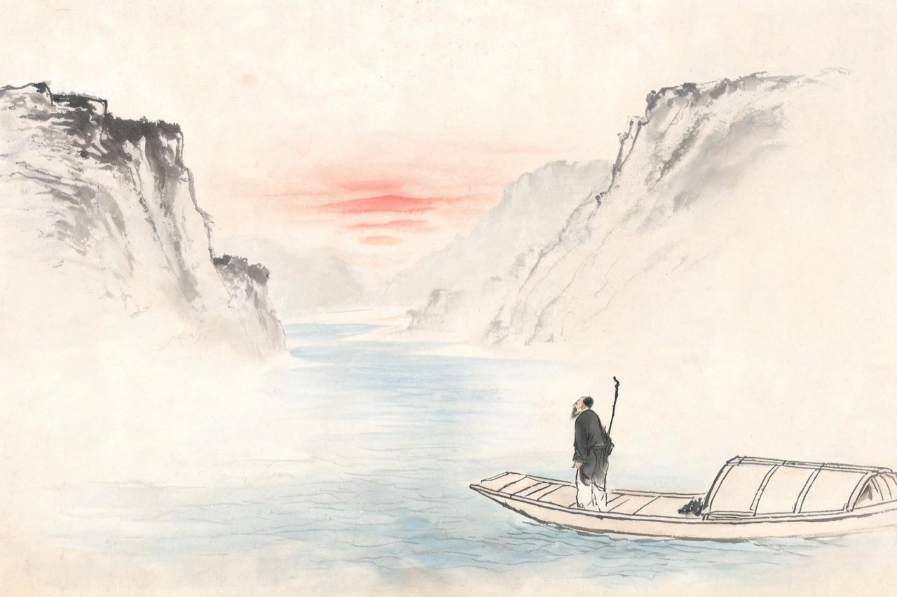

杜甫 · 768-770
湖湘
孤舟

出峡
大历三年正月，你解缆出峡。五十七岁，带着一家老小，顺江东下——去蜀时想好的那条还乡路线，终于走了第一段。
船过荆州，江面豁然开阔。你没有在夔州多留：弟弟们远在各地，音书催促；柏茂琳入朝，夔州无可依。而出峡，就是把自己重新交还给漂泊。
江陵待了几个月，无所依；秋，移居公安，又困顿小城；岁暮，船入洞庭。一年三迁，越迁越南。
二十岁那年下江南，是去看天下之大；五十七岁这一次南下，天下还在，只是已经没有一寸是你的归处。
注
- 出峡月份：大历三年正月——年谱通说；「即从巴峡穿巫峡」的还乡设想至此成行，目的地洛阳；实际止于湖湘。
- 公安小住数月即南徙——困顿情状见《舟中出江陵南浦奉寄郑少监审》诸诗
岁暮，你到了岳阳。昔闻洞庭水，今上岳阳楼——惦记了半生的湖，登上去了。八百里洞庭劈开吴楚，日夜浮着乾坤。而你站在楼上，数着自己的家当：亲朋没有一封信，身边只有一条病躯和一叶孤舟——
登岳阳楼
昔闻洞庭水，今上岳阳楼。
吴楚东南坼，乾坤日夜浮。
亲朋无一字，老病有孤舟。
戎马关山北，凭轩涕泗流。
注
- 前四句雄浑、后四句孤绝——境界与身世的落差为全诗结构。
- 「戎马关山北」：吐蕃犯边、时局未安——收在大处，不止一身之悲
大历五年春，潭州。你在落花时节遇见了李龟年——开元年间天下第一的歌手。当年岐王宅里、崔九堂前，你是常客，他是御用名伶；如今你们一个流落卖唱，一个漂泊无依，在江南的花落里认出了彼此。二十八个字，你把整个盛唐的散场都写进去了——
江南逢李龟年
岐王宅里寻常见，崔九堂前几度闻。
正是江南好风景，落花时节又逢君。
注
- 系年有潭州、江陵两说，另有疑伪说（吴企明）；「落花时节」只取画面，不涉传闻细节。
- 「落花时节」：既是春景，也是两位老人与整个盛唐的晚景，语带双关。
孤舟
大历五年，你五十九岁，人生进入最后一个夏天。
四月，潭州兵变，湖南观察使崔瓘被杀，城中大乱。你携家避乱南下，想去郴州投奔舅氏崔伟。船行到耒阳，江水暴涨，阻在方田驿，旬日不得食。耒阳县令聂某闻讯，驰书致意，送来牛肉白酒。后世据此编出「饫死」的故事——一个饿了很多天的人暴食而死。你不死于耒阳：水退之后，你掉转船头，又回到了潭州。
这一年的大部分日子，你都在船上。潭州、衡州、湘潭之间，一条船就是全部的家当。你病得很重——风痹、消渴、肺疾，右臂偏枯，耳朵听不清了，写信只能用左手。亲友们从各处接济，你知道自己回不了中原了。
冬天，你伏在船上写下最后一首长诗，三十六韵，呈给湖南的亲友——像一生所有上疏一样，最后一篇仍在说：战血流依旧，军声动至今。写完这两句之后还有四句，说的是家事与你终生服膺的葛洪丹诀。
不久，你死在潭州与岳阳之间的江上。一叶孤舟，装着你、你的诗稿和整个盛唐的背影。
元稹后来为你的墓志算了总账：诗人以来，未有如子美者。李白临终，传说去水中捉月，回到月亮上去；你的朋友不在了以后，你也没有停——直到最后一刻，你仍看着人间：看着流血的中原，看着涨水的江，看着来送牛肉白酒的人间。
他到死看着人间。这是你和月亮的区别。
注
- 卒年大历五年（770）冬，年五十九；卒地舟中（潭岳间）以绝笔诗与元稹墓志「旅殡岳阳」推定；新旧唐书「永泰二年」为误记，牛肉白酒致死的「饫死」说为附会。
- 「旬日不得食」：《旧唐书》本传作「旬日不得食」，《新唐书》作「涉旬不得食」。
- 「战血流依旧，军声动至今」为倒数第三韵，其后尚有「葛洪尸定解」四句——节引标注，非篇末
- 「饫死」说不取：聂令馈食为实，暴食致死为附会——评传考订
- 舅氏崔伟：杜甫《奉送二十三舅录事之摄郴州》之「二十三舅」，以湖南录事参军出摄郴州
- 813 年孙杜嗣业扶柩归葬偃师首阳（一说湖南平江，两说并存）。